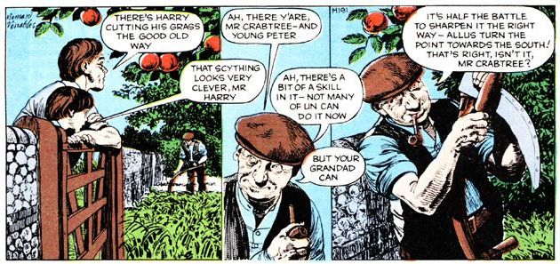
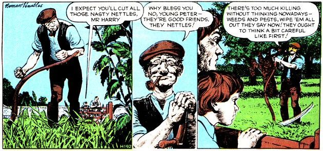

MAN-MADE ROT IS EATING AT THE HEART OF NATURE. WE ARE DESPOILING THE HERITAGE OF OUR SONS, OUR GRANDSONS, AND THEIR GRANDSONS.
And now-direct from England-the world's most conscientious ecology cartoon feature. A lit tie overstated for our American tastes, perhaps, but full of real meat, nonetheless. Ah, if we only had a cartoon series like this on our side of the pond! But, since we don't MOTHER presents Mr. Crabtree Crusades!
Modern powered grass cutting machines have many advantages. They are quick, labour-saving, and very efficient But they have disadvantages too. They are noisy. They punch out evil-smelling poisonous fumes. The fuel they demand has a short future. They are expensive to buy, to some extent expensive to run, and their lives are limited. And they do break down from time to time. Harry and his scythe are efficient, too, more efficient than the machines, even if slower. Except for a soft swish scything is silent, it needs no fuel, it makes no fumes. It needs only the skill and muscle of one contented man. A scythe costs little to buy and is virtually everlasting. In this age when so many country people are simply rural machine-minders the skill of good scything is a joy to watch.
Harry belongs to possibly the last generation who have inherited and valued the skills and rural knowledge of countless forebears. He has no respect for the clever tricks of modern sprays. He thinks that too often they are a blunt instrument used thoughtlessly and clumsily to wipe out everything but the one crop to be protected. He knows that there are many creatures and plants worth saving. Nettles are the food plant of a number of beautiful butterflies. Nettles chopped and steeped in rainwater for a few days make a fertiliser-leave them a few days longer until they ferment and they will kill aphids, such as greenfly, as well as fertilise the plants. Harry dilutes this concentrated liquid with further water for use. If nettles did not grow naturally in odd corners of his land, he would plant them there.
|
 |
 |
|